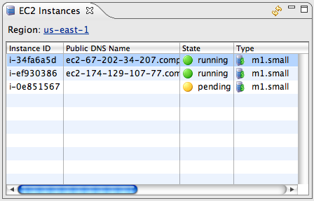

The EC2 Instances view allows you manage the EC2 instances currently running in your account. You can terminate instances, reboot instances, open SSH connections, bundle new AMIs from your instances, and attach or detach Elastic Block Storage volumes.
